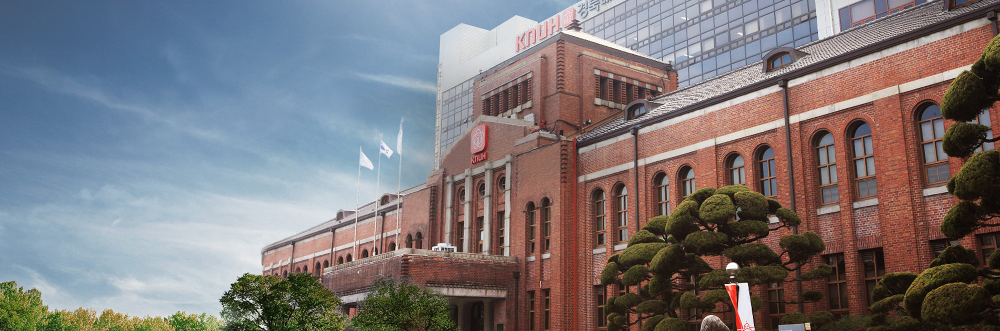
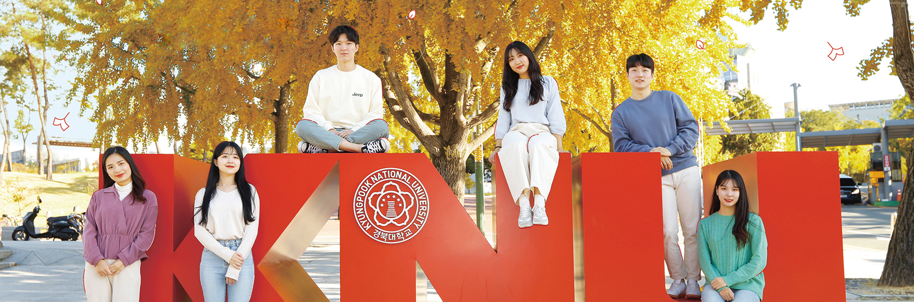
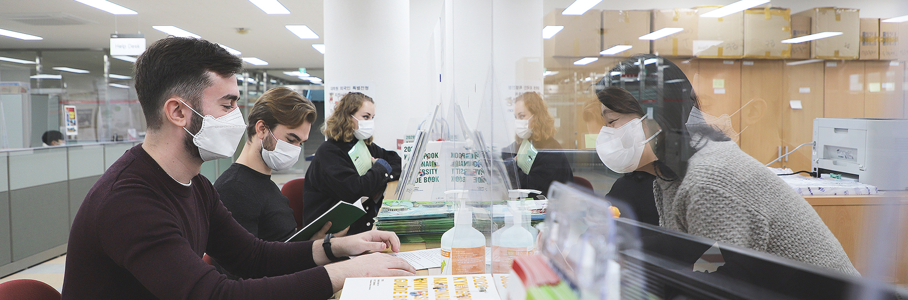
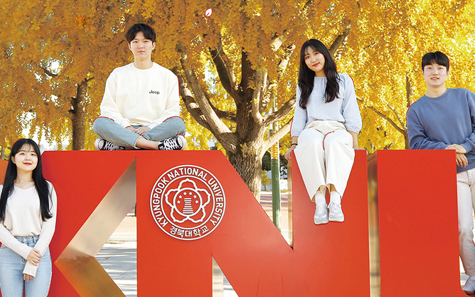
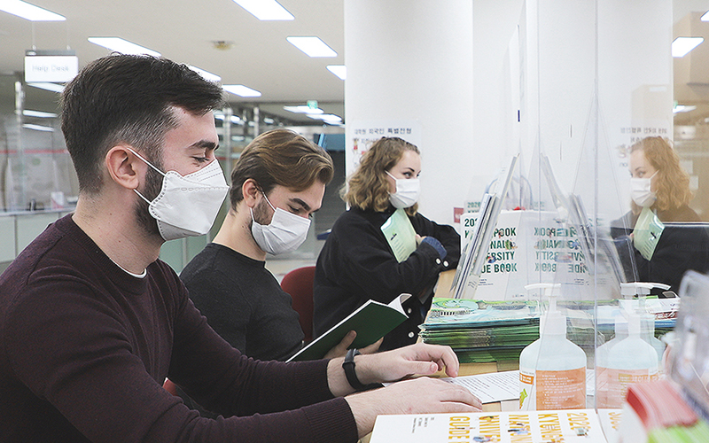

각종 학사자료의 정확한 안내를 위하여 학생 및 보호자의 우편번호, 주소, 전화번호 등 개인정보변경을 요청하니 신라넷(학사행정시스템)에서 수정해주시기 바랍니다. 주소지가 잘못 입력된 경우 학교에서 발송하는 성적표, 등록금 고지서 등 학사관련 안내를 받지 못하여 불이익을 받을 수 있으며…
2022학년도 1학기 대학원 입학을 대비한 5년제 학/석사 연계과정 지원자를 아래와 같이 모집하니 희망하는 학생은 기한 내 학과사무실을 방문/신청하시기 바랍니다. 1. 모집인원 : 24명 이내 2. 모집과정 : 일반대학원 석사과정 3. 지원 가능학과 : 대학원 석사과정 지원학과(전공)는 학사과정의 제1…
2020-2학기 제3차 교양졸업시험 시간표 안내 2020-2학기 제3차 교양졸업시험 시간표와 장소를 아래와 같이 안내합니다.코로나19 확산 방지에 따른 조치사항 가. 시험 전 조치사항 1) 대 상 자: 7학기 이상 재학생 및 수료생 2) 인원제한: 분반별 최대 25명 3) 14일 이내 귀…
알림 제목:대학수능능력시험일 도서관 개관시간 변경안내 2021학년도 대학수학능력시험일의 도서관 개관시간을 다음과 같이 변경하오니 자료실 이용에 참고하시기 바랍니다 2020.12.03(목) 자료실 -2층 정기간행물실 -3층 대출실 -4층 참고논문실/멀티미디어실 비고 9:00 -> 10:00…
정기적 사회활동으로 전동화키트 활용도가 높은 수동휠체어 이용 장애인 (만 15세 이상의 고등학생·대학생·직장인 등) ※ 제외대상 상체 및 상지 기능 상 스스로 탈부착 및 조작 불가능자, 전동스쿠터/전동휠체어 기사용자, 수동휠체어 미보유자, 전년도 수령자 및 타 제도를 통해 유사한 제품을 수령한 자…
2021-1기 유학생 모집 안내 신라대학교 생활관(백양생활관, 글로벌타운) 2021-1기 유학생 모집을 아래와 같이 안내합니다.○2021. 2. 10(월) 이전 입국유학생은 2. 10부터 14일간 백양생활관 격리후 신라대생활관 입사가능 ○2021. 2. 10(월) 이후 입국유학생은 자가격리후 2. 28(일)부터 신라대생활관 입…
고용노동부와 한국고용정보원은 2020년 ‘대학일자리센터 청년정책 체감도 및 만족도조사’를 실시합니다. 청년여러분의 적극적인 응답을 요청드립니다! ○ 내용 : 청년정책과 대학일자리센터 관련 인식 및 만족도 등 ○ 주관 : 고용노동부, 한국고용정보원 ○ 기간 : 2020년 10월 26일(월) 오전10시 ~ 조사…
□ 특강개요 ❍ 주제 및 내용 - 부산 지역 대학생 대상 지역 중소기업 및 유망 스타트업 대표 초청 릴레이 특강 개최 - 지역 중소기업과 유망 스타트업의 인재상에 대해 알아보며 진로 및 취업 방향수립을 위한 기회 제공 ❍ 운영형태 : 온라인 특강 ‣ 사전 신청자에 한해 1주간 녹화링크 공유 ❍ 운영일시 : 20…
[취업] 2020-2학기 취업마일리지 장학금 신청 안내(2021년 2월 졸업예정자 위주) 2020학년도 2학기 취업마일리지 장학금을 지급코자 하오니 대상자들은 아래와 같이 신청하여 주시기 바랍니다. 1. 장학명 : 취업마일리지 장학금 2. 대상자 가. 100마일리지 이상 적립자 나. 우리대학교 재학생(8학기 이상 재학…
1. 모집기간 : 2020.11.24.~2020.11.30. 15시까지(15시 이후에 온 메일은 인정하지 않음) 2. 선발조건 : 무역학과 재학생 중 2020-2학기 국가근로장학금 신청 학생 3. 최종선발일 : 2020.12.03(목) - 학과 일정에 따라 달라질 수 있음. 면접은 학과에서 별도로 진행…
2021-1학기 국가장학금 신청을 아래와 같이 안내합니다. ✔ 신청기간 : ‘20.11.24(화)~’20.12.29(화) 18시(총 36일간) ✔ 신청대상 : 재학생, 신입생, 입학예정자(현 고3, 재수생 등), 편입생, 재입학생, 복학생 신청가능 - 입시가 끝난 수험생(현 고3, 재수생 등 ‘21년 입학예정자)도 신청이 가능…
2020-2학기 푸른등대 디지털 교육지원사업 신규장학생 선발을 아래와 같이 안내합니다. □ 장학사업명 : 2020년 2학기 푸른등대 디지털 교육지원사업 □ 학생 신청 기간: 2020. 11. 16.(월) 09:00 ~ 11. 27.(금) 18:00 ※ 주말 및 공휴일 포함 신청기간 내 24시간 신청 가능(단, 마감일 제외)…
2020-10-26 ~ 2020-11-06
교직과정이수 신청
2020-11-02 ~ 2020-11-06
일반학과 부·다전공(복수·연계·학생설계·융합전공) 신청 및 포기
2020-11-08
학교법인박영학원설립기념일
2020-11-09
수업일수 2/3
2020-11-09 ~ 2020-11-13
교직 복수전공 신청 및 포기
2020-11-16 ~ 2020-11-20
전과 신청
2020-11-18
수업일수 3/4
2020-11-30 ~ 2020-12-04
기초필수교양 학점인정 신청